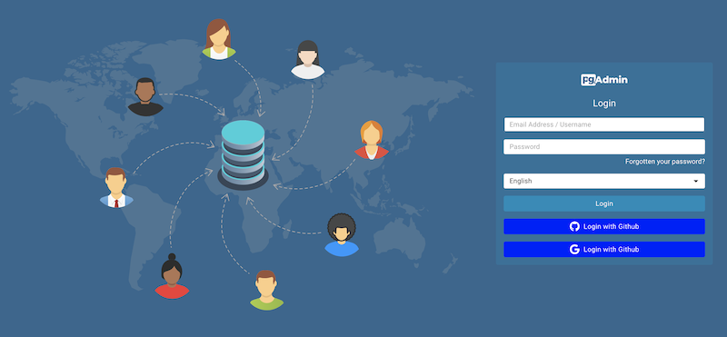

Enabling OAUTH2 and OIDC Authentication¶
To enable OAUTH2 or OpenID Connect (OIDC) authentication for pgAdmin, you must configure the OAUTH2 settings in the config_local.py or config_system.py file (see the config.py documentation) on the system where pgAdmin is installed in Server mode. You can copy these settings from config.py file and modify the values for the following parameters.
OAuth2 vs OpenID Connect (OIDC)¶
pgAdmin supports both OAuth2 and OIDC authentication protocols:
OAuth2 is an authorization framework that allows third-party applications to obtain limited access to user accounts. When using OAuth2, pgAdmin must explicitly call the provider’s userinfo endpoint to retrieve user profile information.
OpenID Connect (OIDC) is an identity layer built on top of OAuth2 that provides standardized user authentication and profile information. When using OIDC, user identity information is included directly in the ID token, which is more efficient and secure.
Note
When OAUTH2_SERVER_METADATA_URL is configured, pgAdmin treats the provider as an OIDC provider and will:
Use ID token claims for user identity (sub, email, preferred_username)
Skip the userinfo endpoint call when ID token contains sufficient information
Validate the ID token automatically using the provider’s public keys
This is the recommended approach for modern identity providers like Microsoft Entra ID (Azure AD), Google, Keycloak, Auth0, and Okta.
Parameter |
Description |
|---|---|
AUTHENTICATION_SOURCES |
The default value for this parameter is internal. To enable OAUTH2 authentication, you must include oauth2 in the list of values for this parameter. You can modify the value as follows:
|
OAUTH2_NAME |
The name of the Oauth2 provider, ex: Google, Github |
OAUTH2_DISPLAY_NAME |
Oauth2 display name in pgAdmin |
OAUTH2_CLIENT_ID |
Oauth2 Client ID |
OAUTH2_CLIENT_SECRET |
Oauth2 Client Secret. Optional for public clients using Authorization Code + PKCE. For confidential clients (server-side apps), keep this set. For public clients (no secret), pgAdmin will enforce PKCE and perform an unauthenticated token exchange. |
OAUTH2_CLIENT_AUTH_METHOD |
Client authentication method for the token endpoint. Default behavior uses OAUTH2_CLIENT_SECRET (confidential client), or PKCE when no secret is provided (public client). Set to workload_identity to authenticate using an Azure Entra ID workload identity (federated credential) without a client secret. |
OAUTH2_WORKLOAD_IDENTITY_TOKEN_FILE |
When OAUTH2_CLIENT_AUTH_METHOD is workload_identity, path to the projected OIDC token file (Kubernetes service account JWT). This file must exist at pgAdmin startup. |
OAUTH2_TOKEN_URL |
Oauth2 Access Token endpoint |
OAUTH2_AUTHORIZATION_URL |
Endpoint for user authorization |
OAUTH2_SERVER_METADATA_URL |
OIDC Discovery URL (recommended for OIDC providers). When set, pgAdmin will use OIDC flow with automatic ID token validation and user claims from the ID token. Example: https://login.microsoftonline.com/{tenant}/v2.0/.well-known/openid-configuration. When using this parameter, OAUTH2_TOKEN_URL and OAUTH2_AUTHORIZATION_URL are optional as they will be discovered automatically. |
OAUTH2_API_BASE_URL |
Oauth2 base URL endpoint to make requests simple, ex: https://api.github.com/ |
OAUTH2_USERINFO_ENDPOINT |
User Endpoint, ex: user (for github, or user/emails if the user’s email address is private) and userinfo (for google). For OIDC providers, this is optional if the ID token contains sufficient claims (email, preferred_username, or sub). |
OAUTH2_SCOPE |
Oauth scope, ex: ‘openid email profile’. For OIDC providers, include ‘openid’ scope to receive an ID token. |
OAUTH2_ICON |
The Font-awesome icon to be placed on the oauth2 button, ex: fa-github |
OAUTH2_BUTTON_COLOR |
Oauth2 button color |
OAUTH2_USERNAME_CLAIM |
The claim which is used for the username. If the value is empty, for OIDC providers pgAdmin will use: 1) email, 2) preferred_username, or 3) sub (in that order). For OAuth2 providers without OIDC, email is required. Ex: oid (for AzureAD), email (for Github), preferred_username (for Keycloak) |
OAUTH2_AUTO_CREATE_USER |
|
OAUTH2_ADDITIONAL_CLAIMS |
If a dictionary is provided, pgAdmin will check for a matching key and value on the ID token first (for OIDC providers), then fall back to the userinfo endpoint response. In case there is no match with the provided config, the user will receive an authorization error. Useful for checking AzureAD wids or groups, GitLab owner, maintainer and reporter claims. |
OAUTH2_SSL_CERT_VERIFICATION |
|
OAUTH2_CHALLENGE_METHOD |
Enable PKCE workflow. PKCE method name, only S256 is supported |
OAUTH2_RESPONSE_TYPE |
Enable PKCE workflow. Mandatory with OAUTH2_CHALLENGE_METHOD, must be set to code |
Redirect URL¶
The redirect url to configure Oauth2 server is <http/https>://<pgAdmin Server URL>/oauth2/authorize After successful application authorization, the authorization server will redirect the user back to the pgAdmin url specified here. Select https scheme if your pgAdmin server serves over https protocol otherwise select http.
Master Password¶
In the multi user mode, pgAdmin uses user’s login password to encrypt/decrypt the PostgreSQL server password. In the Oauth2 authentication, the pgAdmin does not store the user’s password, so we need an encryption key to store the PostgreSQL server password. To accomplish this, set the configuration parameter MASTER_PASSWORD to True, so upon setting the master password, it will be used as an encryption key while storing the password. If it is False, the server password can not be stored.
Login Page¶
After configuration, on restart, you can see the login page with the Oauth2 login button(s).

PKCE Workflow¶
To enable PKCE workflow, set the configuration parameters OAUTH2_CHALLENGE_METHOD to S256 and OAUTH2_RESPONSE_TYPE to code. Both parameters are mandatory to enable PKCE workflow.
Public vs Confidential OAuth Clients¶
OAuth providers support two common client types:
Confidential clients have a client secret and can authenticate to the token endpoint.
Public clients do not have a client secret (or the secret cannot be safely stored).
pgAdmin supports interactive user login for both client types:
If OAUTH2_CLIENT_SECRET is set, pgAdmin treats the provider as a confidential client.
If OAUTH2_CLIENT_SECRET is missing, empty, or set to None, pgAdmin treats the provider as a public client and requires PKCE.
Note
For public clients, pgAdmin uses Authlib’s native behavior to perform an unauthenticated token exchange
(token endpoint client authentication method: none). This is required for Authorization Code + PKCE
flows where no client secret is available.
Azure Entra ID Workload Identity (AKS) (No Client Secret)¶
pgAdmin can authenticate to Microsoft Entra ID (Azure AD) without a client secret using an AKS Workload Identity projected service account token (OIDC federated credential).
This is a confidential client scenario (server-side app), but client authentication to the token endpoint is performed using a JWT client assertion.
Enable workload identity mode¶
Set the following parameters in your provider configuration:
OAUTH2_CONFIG = [{
'OAUTH2_NAME': 'entra-workload-identity',
'OAUTH2_DISPLAY_NAME': 'Microsoft Entra ID',
'OAUTH2_CLIENT_ID': '<Application (client) ID>',
'OAUTH2_CLIENT_SECRET': None, # not required
'OAUTH2_CLIENT_AUTH_METHOD': 'workload_identity',
'OAUTH2_WORKLOAD_IDENTITY_TOKEN_FILE':
'/var/run/secrets/azure/tokens/azure-identity-token',
'OAUTH2_SERVER_METADATA_URL':
'https://login.microsoftonline.com/<tenant-id>/v2.0/.well-known/openid-configuration',
'OAUTH2_SCOPE': 'openid email profile',
}]
With this configuration:
pgAdmin will not require OAUTH2_CLIENT_SECRET.
pgAdmin will not use PKCE for this provider.
During the token exchange, pgAdmin will send:
client_assertion_type=urn:ietf:params:oauth:client-assertion-type:jwt-bearerclient_assertion=<projected service account JWT>
Azure App Registration setup¶
In Microsoft Entra ID:
Create an App registration for pgAdmin.
Configure a Redirect URI to
<http/https>://<pgAdmin Server URL>/oauth2/authorize.In Certificates & secrets, you do not need to create a client secret for workload identity.
Federated credential (workload identity) configuration¶
Add a Federated credential to the App registration:
Issuer: your AKS cluster OIDC issuer URL.
Subject:
system:serviceaccount:<namespace>:<serviceaccount-name>Audience: typically
api://AzureADTokenExchange
AKS ServiceAccount example¶
Example ServiceAccount for AKS Workload Identity:
apiVersion: v1
kind: ServiceAccount
metadata:
name: pgadmin
namespace: pgadmin
annotations:
azure.workload.identity/client-id: "<Application (client) ID>"
---
apiVersion: apps/v1
kind: Deployment
metadata:
name: pgadmin
namespace: pgadmin
spec:
template:
metadata:
labels:
azure.workload.identity/use: "true"
spec:
serviceAccountName: pgadmin
Note
The projected token file path can vary by cluster configuration.
In many AKS setups it is provided via the AZURE_FEDERATED_TOKEN_FILE environment
variable and mounted under /var/run/secrets/azure/tokens/.
OIDC Configuration Examples¶
Using OIDC with Discovery Metadata (Recommended)¶
When using OIDC providers, configure the OAUTH2_SERVER_METADATA_URL parameter to enable automatic discovery and ID token validation:
OAUTH2_CONFIG = [{
'OAUTH2_NAME': 'my-oidc-provider',
'OAUTH2_DISPLAY_NAME': 'My OIDC Provider',
'OAUTH2_CLIENT_ID': 'your-client-id',
'OAUTH2_CLIENT_SECRET': 'your-client-secret',
'OAUTH2_SERVER_METADATA_URL': 'https://provider.example.com/.well-known/openid-configuration',
'OAUTH2_SCOPE': 'openid email profile',
# OAUTH2_USERINFO_ENDPOINT is optional when using OIDC
# Token and authorization URLs are discovered automatically
}]
With this configuration:
pgAdmin will use the OIDC discovery endpoint to automatically find token and authorization URLs
User identity will be extracted from ID token claims (sub, email, preferred_username)
The userinfo endpoint will only be called as a fallback if ID token lacks required claims
ID token will be automatically validated using the provider’s public keys
Using OIDC as a Public Client (No Client Secret) with PKCE¶
If your OAuth/OIDC application is configured as a public client (no client secret), pgAdmin can still perform interactive user login using Authorization Code + PKCE.
OAUTH2_CONFIG = [{
'OAUTH2_NAME': 'my-oidc-public',
'OAUTH2_DISPLAY_NAME': 'My OIDC Provider (Public Client)',
'OAUTH2_CLIENT_ID': 'your-client-id',
# Public client: omit OAUTH2_CLIENT_SECRET or set it to None/empty.
'OAUTH2_CLIENT_SECRET': None,
'OAUTH2_SERVER_METADATA_URL': 'https://provider.example.com/.well-known/openid-configuration',
'OAUTH2_SCOPE': 'openid email profile',
# PKCE is mandatory for public clients
'OAUTH2_CHALLENGE_METHOD': 'S256',
'OAUTH2_RESPONSE_TYPE': 'code',
}]
With this configuration:
pgAdmin enforces PKCE (challenge method + response type)
The token exchange is performed without a client secret
Username Resolution for OIDC¶
When OAUTH2_SERVER_METADATA_URL is configured (OIDC mode), pgAdmin will resolve the username in the following order:
OAUTH2_USERNAME_CLAIM (if configured) - checks ID token first, then userinfo
email claim from ID token or userinfo endpoint
preferred_username claim from ID token (standard OIDC claim)
sub claim from ID token (always present in OIDC, used as last resort)
Example with custom username claim:
OAUTH2_CONFIG = [{
# ... other config ...
'OAUTH2_USERNAME_CLAIM': 'preferred_username',
# pgAdmin will use 'preferred_username' from ID token for the username
}]
Example without custom claim (uses automatic fallback):
OAUTH2_CONFIG = [{
# ... other config ...
# No OAUTH2_USERNAME_CLAIM specified
# pgAdmin will try: email -> preferred_username -> sub
}]
Legacy OAuth2 Configuration (Without OIDC)¶
For providers that don’t support OIDC discovery, configure all endpoints manually:
OAUTH2_CONFIG = [{
'OAUTH2_NAME': 'github',
'OAUTH2_DISPLAY_NAME': 'GitHub',
'OAUTH2_CLIENT_ID': 'your-client-id',
'OAUTH2_CLIENT_SECRET': 'your-client-secret',
'OAUTH2_TOKEN_URL': 'https://github.com/login/oauth/access_token',
'OAUTH2_AUTHORIZATION_URL': 'https://github.com/login/oauth/authorize',
'OAUTH2_API_BASE_URL': 'https://api.github.com/',
'OAUTH2_USERINFO_ENDPOINT': 'user',
'OAUTH2_SCOPE': 'user:email',
# No OAUTH2_SERVER_METADATA_URL - pure OAuth2 mode
}]
In this mode, user identity is retrieved only from the userinfo endpoint.